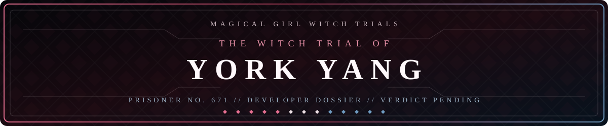

01 / Ema Sakuraba
Empathy
Read the roomInterfaces should make room for people, not ask people to make room for the interface.

A developer dossier for AI systems, creative software, visual-novel technology, anime media, and unusual cross-platform projects.
Every project begins with a point of view. These three witnesses keep the work human, rigorous, and curious.
Interfaces should make room for people, not ask people to make room for the interface.
Good systems make their assumptions visible and their failure modes recoverable.
The most useful tools often begin at the edge of two disciplines.
A closer look at the person, craft, and technical instincts behind the record.
Open 02Four case files spanning wearable media, visual novels, anime enhancement, and campus vision.
Open 03A live reading of public GitHub activity, refreshed when you open the ledger.
Open 04A direct line for thoughtful collaborations and strange, useful software.
Open